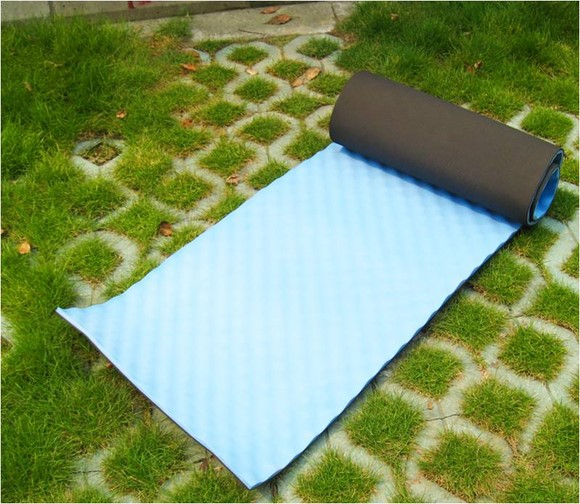

发信人: gundamlsx (Pupil_L), 信区: outdoor
标 题: 野协2010团购正式版
发信站: 饮水思源 (2010年10月26日21:01:02 星期二)
这是团购的正式版。
背包有颜色需求 请短信说明
＝＝＝＝＝＝＝＝＝＝＝＝＝＝＝防潮垫＝＝＝＝＝＝＝＝＝＝＝＝＝＝
1CM EVA 铝箔防潮垫 15元左右
重量：300克
规格：180×50×1.0cm
EVA发泡材质，耐磨，有一定厚度，适合帐篷、野餐、露营等使用。
选购指南：入门级防潮垫，不经常走户外的可以选购。
screen.width - 200){this.width = screen.width - 200}">
波浪防潮垫 30元左右
尺寸：180x50x1.6cm(单人垫)
重量：500克左右
材质：EVA发泡
蛋巢型的内层设计使得人体感觉更加舒适，有利于透气保暖重量轻,便于携带，使您的购
买更加物超所值适用用于不平的地面，蛋巢型设计可正减少不平地面造成的不舒适感觉。
蛋槽形的设计使得睡袋可以在蛋槽形的凸凹处保存一定的空间，利于保暖产品采用双层设
计，内层选用轻软弹性好的整张发泡材料制成，产品采用热压技术贴合内外层,杜绝了开胶
。
选购指南：相对于铝箔防潮垫，此款的耐用性更强，透气性更好，在低温的情况下不会产
生铝箔防潮垫的结露现象，强烈推荐！
 screen.width - 200){this.width = screen.width - 200}">
＝＝＝＝＝＝＝＝＝＝＝＝＝＝＝背包＝＝＝＝＝＝＝＝＝＝＝＝＝＝＝
CROSS CR2303 Track 65L 275元左右
2KG
一款简洁而实用型徒步、野营背包.
一．用料：
1. 韩国进口210DX210D PU 1000MM尼龙牛津布和420D尼龙牛津布PU1000MM
2. UTX-DURAFLEX多耐福扣件.
3. YKK拉链.
4香港胜记尼龙织带.
二．容量：65L+10L
三．重量：2000克
四．颜色：红、蓝、绿、
五．功能简介：
1.顶包可向上扩容10L.
2. 3D网纱制作的加厚肩带和腰带,透气性好。
3. 背负系统为CR强力背负系统，能使重量得到最好的传递，V型的结构确保了臂部的自由
转动，对人体自然活动的限制要小，背包的晃动最小
4.肩带上配水管挂夹,方便饮水.
5.多外挂点, 底部睡袋仓可单独开启.
6.时尚易插型V形插扣，重量减轻
7.腰带向内收拉，省力方便
8.底布面料为1000D涤纶牛津布，耐磨性强
选购指南：性价极高！对于入门者来说不再让背包的价格高不可攀，推荐男生使用。能够
胜任任何路线，拥有一般户外爱好者选包时的推荐的全部要素~~~ 非常值得购买~
screen.width - 200){this.width = screen.width - 200}">
ACME TREK 55L 300元左右
2.15KG
颜色：灰色 蓝色 红色
1.面料：面料：6000D提花牛津布+600D牛津布。PU：1000MM。
2. 背负系统为经典CR强力背负系统。根据人体工程学特点，按照人体背部的受力特点，背
部嵌入树脂支撑板和航空开槽铝条，确保优越稳定性，将重量垂直，均匀，合理分布在胯
下。肩带和腰带填充双倍高密度海绵，给予了背部精心的呵护。依据使用者不同背部尺寸
，拉动背部调节带，既可轻松自如的调节背部的长短。
3. 扣件为ACME定制扣具。
4. 背包织带为高强度PP织带，更耐磨。
5. 拉链均采用ACME定制拉链
6.胸扣为哨式，紧急情况下是求救方式之一。
7.腰带增加了梯扣调节，更符合人体的运动特征，更快捷，省力。
8.腰带配有弹力层
选购指南：此款容量较上款稍小，建议女生使用。
screen.width - 200){this.width = screen.width - 200}">
＝＝＝＝＝＝＝＝＝＝＝＝＝＝＝睡袋＝＝＝＝＝＝＝＝＝＝＝＝＝＝＝
睡袋内套 30元左右
质地: 抓绒
尺寸：头部长：27，下部长：171cm；宽90cm（宽是松紧的70-90CM之间）。
特点：重量轻，手感特别柔软。可机洗，可做睡袋内胆或者夏季露营使用，冬季套作睡袋
内胆可以提高睡袋保暖10度以上。
选购指南：不打算买睡袋的同学可以考虑此款！用此内胆不但保温效果好而且干净，有睡
袋的童鞋同样推荐，，对于睡袋清洁起到很好的作用。
screen.width - 200){this.width = screen.width - 200}">
英国Woodworm睡袋70元左右
规格: 220x85cm(适合200cn身高一下的人）
重量：1.7kg
面料: 高密柔软舒适190t棉
填充: 400G/M2中空棉
舒适温度-5℃~+15℃
选购指南：此款睡袋性价极高，满足了一般条件下的出游，表面经过防泼水处理，冬天很
冷的时候在宿舍也可以用哦！
screen.width - 200){this.width = screen.width - 200}">
＝＝＝＝＝＝＝＝＝＝＝＝＝＝＝其他＝＝＝＝＝＝＝＝＝＝＝＝＝＝＝
戈尔牧1W LED头灯18元左右
灯头尺寸：73* 55 *62mm
重量：85克（不含电池）
电池：AAA（7号），3节
灯头：1W的大功率LED灯头
寿命：10万小时
特点：
1、使用1粒1W的大功率LED灯头，内加聚光杯，照射距离可达40米
2、灯俯仰角度可调（90度）
3、丁字形头带，可调节角度，带子长度可调
4、三种照明制式：稍强光，强光，爆闪功能（碰上紧急情况，可用这个功能发出求救信
号）
选购指南：营地必备装备。
screen.width - 200){this.width = screen.width - 200}">
REX 3W SUPER LIGHT 强光便携手电 18元左右
额定电压：4.5V（3节7号电池，1.5V*3）
额定电流：660mA
LED级别：A级3W
尺寸：见图所示
颜色：黑色
净重：95g
选购指南：性价极高。缺点是防水性能较差。

MOUNTAIN TRIP户外抗起毛护膝
材质：百合魔术扣，进口OK布（75%氯丁二烯、25%弹性锦纶）
选购指南：很好的一款护膝，野协去年团购产品，在活动中保护你的膝盖不受伤害。
screen.width - 200){this.width = screen.width - 200}">
GANZO工具钳 65元左右
09 年关铸力推2015PB，22功能，采用440钢打造，是关铸产品又一力作，2015PB是为特种
部队量身订做，产品溶合隐蔽，防锈，轻便，实用为一体，特殊涂层外表，执行任务时无
反光，隐蔽性极好，防锈更不用多说，全钳重235克，比国内及其他国际品牌钳身都要轻，
很好的解决户外出行，装备沉重的问题，功能依然强大！
采购指南：相对于军刀，此款工具钳功能较多，但是稍重。
screen.width - 200){this.width = screen.width - 200}">
防水袋9元左右
27*33CM
选购指南：在户外把自己的手机相机装进去是再好不过的选择了！必备之良品，强力推荐
！
screen.width - 200){this.width = screen.width - 200}">
不锈钢折叠杯 10元左右
选购指南：实用！小巧！在平时的生活中也会常常用到。
screen.width - 200){this.width = screen.width - 200}">
瑞士军刀 128元左右
选购指南：军刀的品质大家都知道的～超级实用～弥补了去年团购产品没有锯子的遗憾～

Gorm登山杖 55元左右
【规格】135厘米（全长），62厘米（收缩）
【重量】230克，（普通登山杖都为350克以上）
【手柄】软木+EVA
【附件】带护腕，雪托，钨钢耐磨杖尖
选购指南：性价极高的产品，入门必备。一款徒步与登山皆宜的产品，很舒适！推荐！
screen.width - 200){this.width = screen.width - 200}">
火枫Fire-maple-202 130元左右
【产品型号】FMC-202 2-3人便携式套锅
【产品尺寸】煎锅：177X39mm; 大锅：170X100mm; 小锅：150X80mm
【产品净重】720g
【使用范围】适合2到3人使用
【产品说明】采用进口铝材，高硬质氧化，耐高温、摩擦；汤匙采用PP材料；饭勺、塑碗
采用高硬度耐高温材质。包括一个大锅、小锅和煎锅，一汤匙、包括一个大
锅、小锅和煎锅，一汤匙、一饭勺，三个塑料碗和一块百洁布。
【产品包装】网状黑色布袋套，外包装为精美硬质纸盒。
选购指南：FB标准配备之一，尤其适合2人开小灶用，绝对的移动厨房！！小锅是专业汤锅
大锅可以用来准备主食，相当全面！是兼顾了价格与配备，的高性价比产品~！
screen.width - 200){this.width = screen.width - 200}">
火枫Fire-maple FMS-105 120元左右
*规格：145x145x48mm
*重量：246g
*功率：3000w
*适用：露营、自驾车
描 述：
FMS-105是目前火枫炉具当中支撑最稳固的分体炉头，经过不断改进日趋完美！
1.支架改进：材质加厚，增加耐用性；改变折叠方向更符合您的使用习惯；支撑脚改为内
弧设计，增强支撑稳定性。
2.工艺提高：提高加工铆接和表面处理工艺，承重能力和耐用性大大提高，满足长期可靠
的使用要求。
3.性能提升：加大喷嘴，火力更强劲；加装可拆卸的电打火，更方便点火。
选购指南：火枫炉具类最节省燃料的一款！功率比FMS-104少500W，但是更节省燃料，是经
济的选择，FB米人用~~~
screen.width - 200){this.width = screen.width - 200}">
========================================================
本次团购活动自愿参与，请根据个人情况选择需要的物品，所列价格为参考价格，具体定
价以交钱时为准,但不会相差太大！
购买的会员请把自己要买的东西回复到手机18801971189(周五晚12点之前)，加上自己的姓
名！注意：由于防潮垫和背包均是两款，所以请注明具体款式！谢谢配合
--
※ 来源:·饮水思源 bbs.sjtu.edu.cn·[FROM: 2001:da8:8000:e115:9852:beec:eb32:2b2e]
|